Place Value
-
Place value
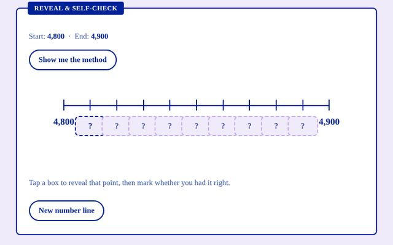
Number Line Detective
Work out the missing labels on a number line using the difference, divide, and label method.
-
Place value
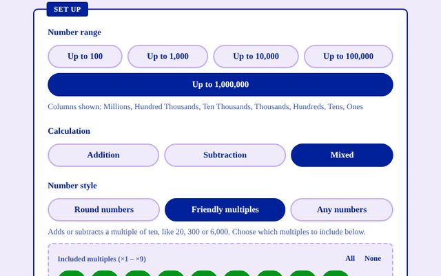
Place Value Practice
Watch place value counters on a chart and race the clock to work out addition and subtraction calculations.
-
Place value
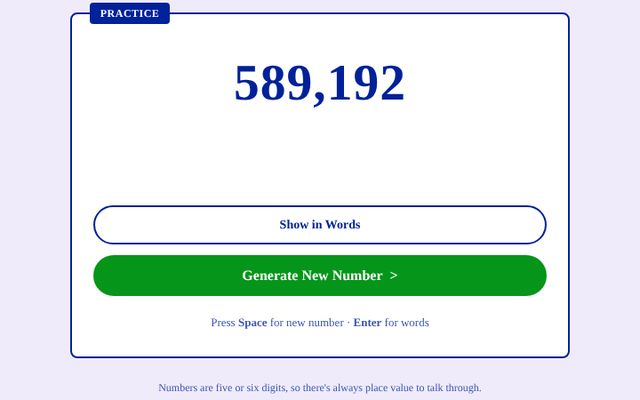
Number Words
Practise reading big numbers aloud, then check how they're written out in words.
-
Place value
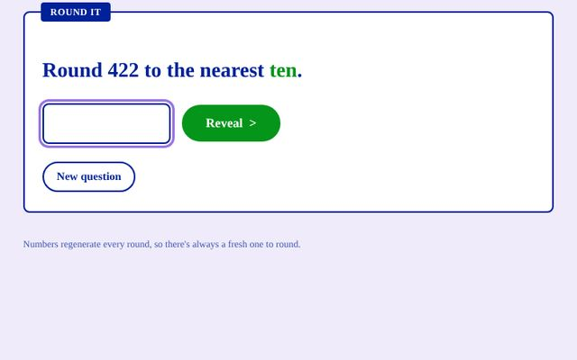
Rounding Practice
Round numbers to the nearest 10, 100 or 1,000, then watch a number line reveal how it works.
-
Place value
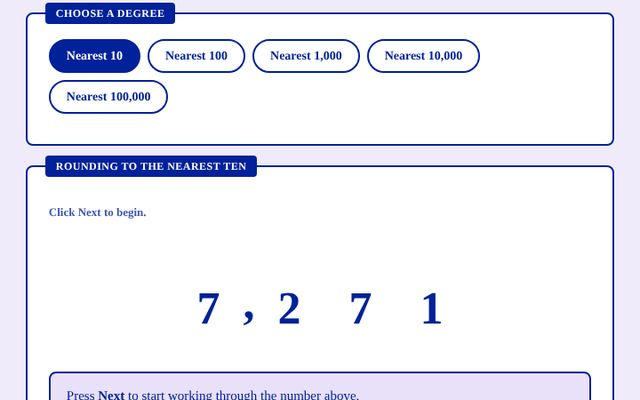
Rounding: Step by Step
A teaching tool that walks through the circle-underline-adjust-zero method for rounding any number.
Addition & Subtraction
-
Add & subtract
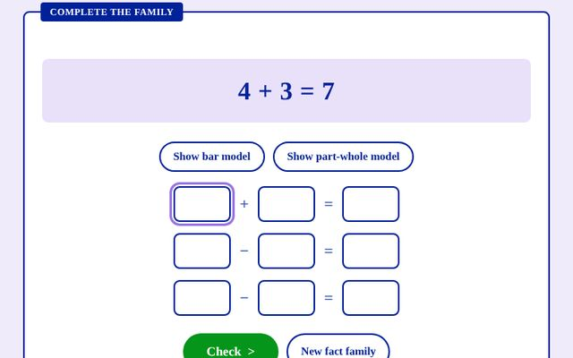
Fact Families
Given one fact, work out the other three in the same family — addition/subtraction or multiplication/division.
-
Add & subtract
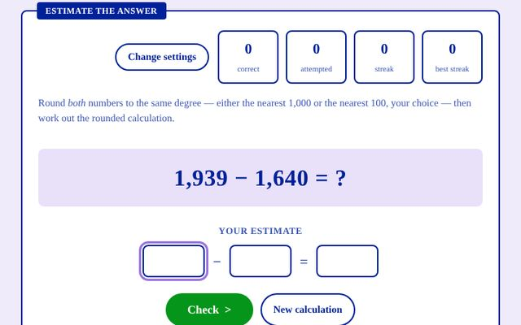
Estimating with Rounding
Round both numbers in an addition or subtraction to the nearest 1,000 or 100, then use the rounded numbers to estimate the answer.
-
Add & subtract
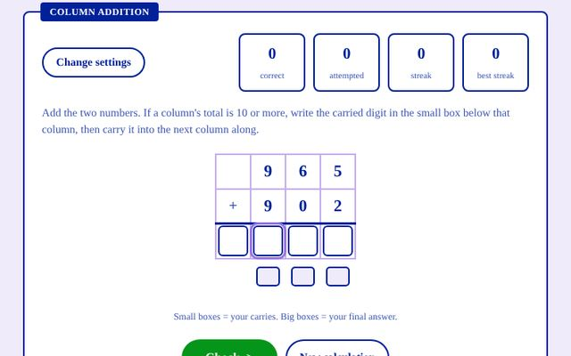
Column Addition & Subtraction
Work a calculation out in the column grid, writing in your own carries or exchanges, then type your final answer.
-
Add & subtract
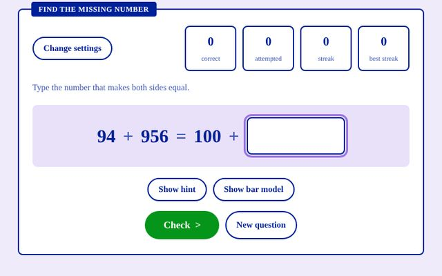
Missing Numbers
Find the missing number in a pair of equal calculations by spotting how one number changes to make the other.
Multiplication & Division
-
Multiply & divide
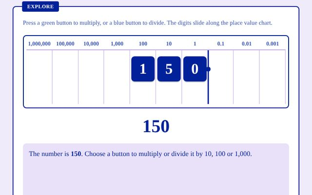
Multiply and Divide by 10, 100, 1,000
Watch the digits slide along the place value chart when you multiply or divide by 10, 100 or 1,000, then practise.
-
Multiply & divide
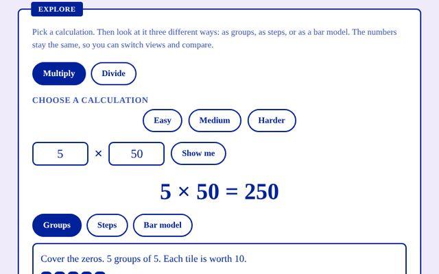
Multiply and Divide by Multiples of 10
See 6 × 800 or 3,500 ÷ 700 as groups, steps and a bar model, then practise.
-
Multiply & divide
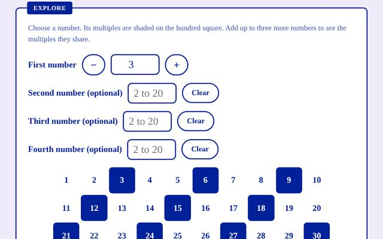
Multiples & Common Multiples
Explore multiples on a hundred square, then practise finding multiples, common multiples and the smallest common multiple.
-
Multiply & divide
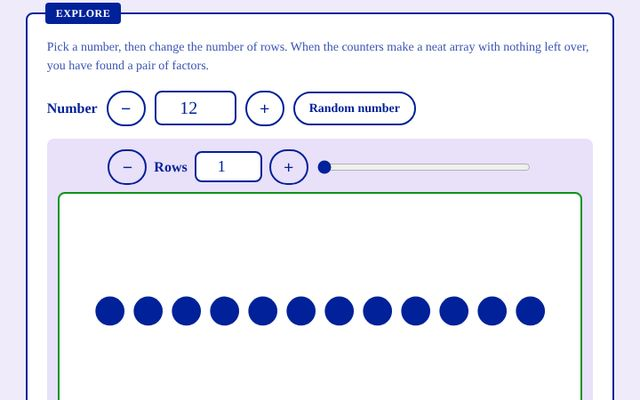
Factors & Common Factors
Use counters to find the factors of a number, then practise listing factors and common factors.
-
Multiply & divide
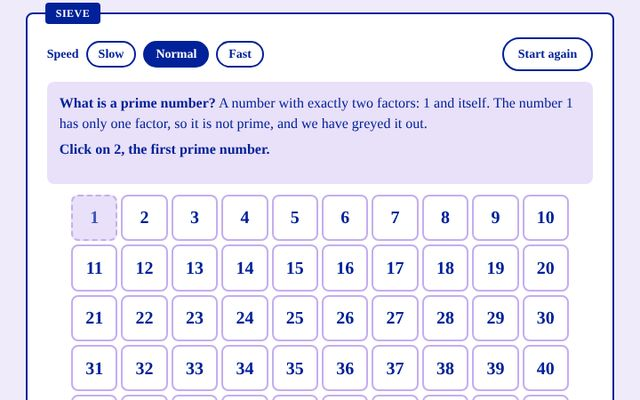
Prime Numbers
Watch the Sieve of Eratosthenes find the primes up to 100, then practise telling prime and composite numbers apart.
-
Multiply & divide
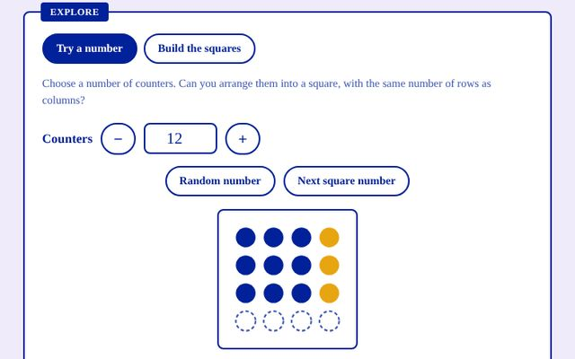
Square Numbers
Use counters to see why square numbers are square, then practise squares and the squared notation.
-
Multiply & divide
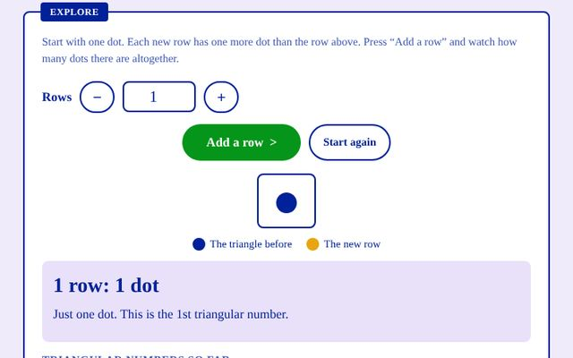
Triangular Numbers
Build triangles one row at a time to see where triangular numbers come from, then practise finding the next one.
Fractions
-
Fractions
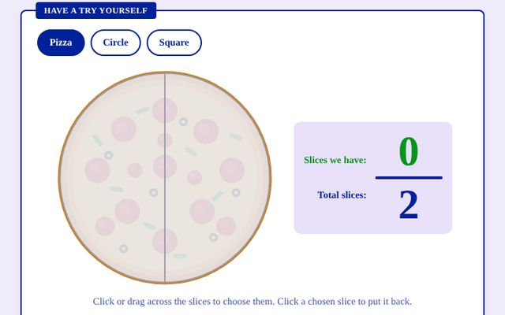
Fractions: Slices
Cut a pizza, circle or square into equal slices, choose some, and see the fraction as numbers and words.
-
Fractions
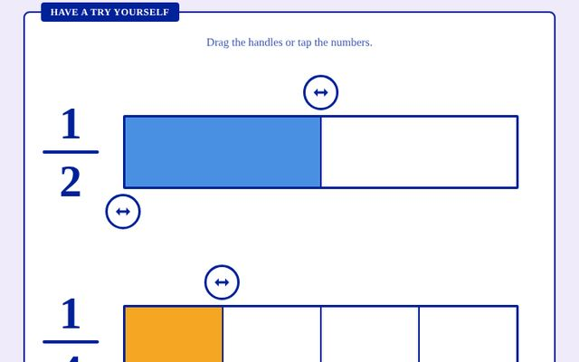
Fractions: Equivalent Bars
Change the top and bottom numbers of two fraction bars. When the bars show the same amount, they turn green.
-
Fractions
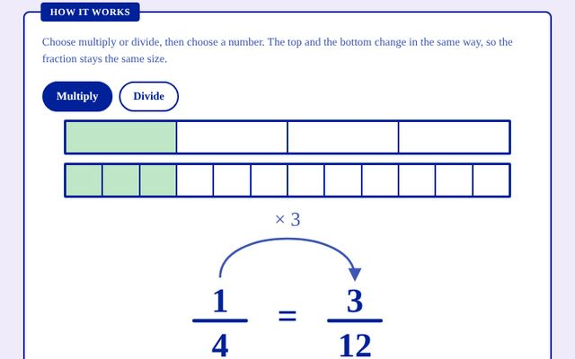
Finding Equivalent Fractions
See why the top and bottom must be multiplied or divided by the same number, then find the missing number.
-
Fractions
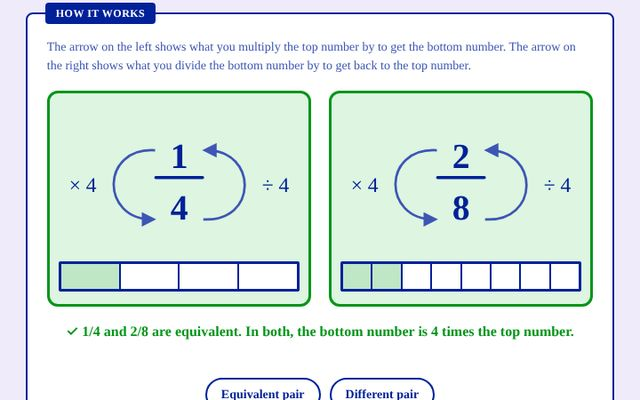
Fractions: The Ratio Method
Look inside a fraction to see how many times the top goes into the bottom. Fractions with the same ratio are equivalent.
-
Fractions
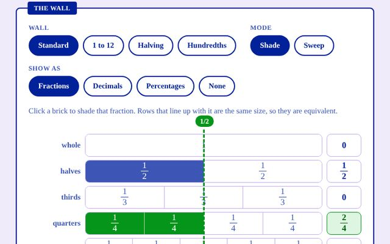
Fraction Wall
Shade a fraction on the wall and see every row that lines up with it. Drag a line across to find equivalent fractions.
-
Fractions
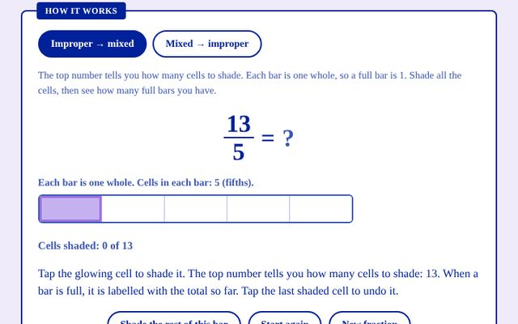
Mixed & Improper Fractions
Shade bar models cell by cell to change between improper fractions and mixed numbers.
-
New Fractions
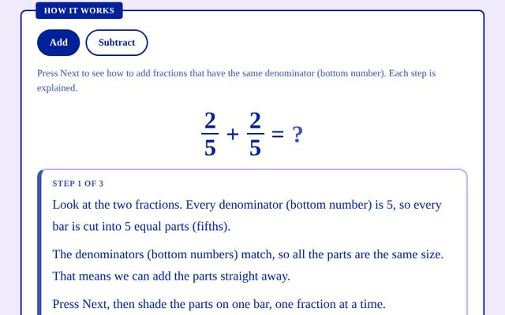
Add & Subtract Fractions
Shade bar models to add and subtract fractions with the same denominator.
-
New Fractions
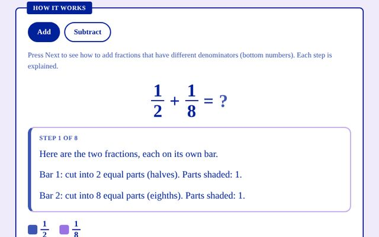
Different Denominators
Cut fractions into equal parts so the bottom numbers match, then add or subtract them.
-
New Fractions
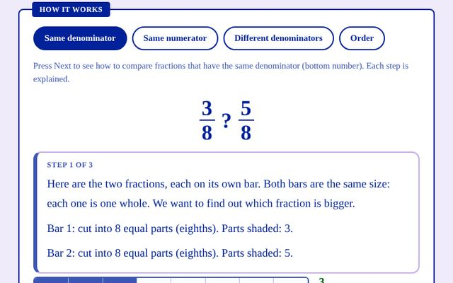
Compare & Order Fractions
Find out which fraction is bigger and put fractions in order, using bars cut into equal parts.
Maths Skills
-
Maths skills
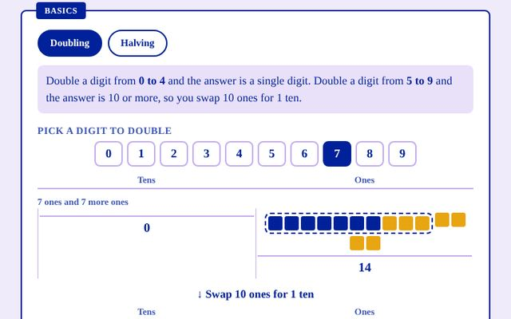
Doubling and Halving
See doubling and halving with place value blocks, including swapping 10 ones for 1 ten, step by step. Then practise at six levels.
No tools match that. Try a different word.